Items
Upgrades are permanent: a better tool or weapon replaces the one you have, and armor and accessories are worn as soon as you get them. The gear locker in your bag holds tools and weapons without using bag space. Sell prices are what your villagers pay (each only buys the goods of their trade).
Swords
| Item | Stats | How to get it | Sell | |
|---|---|---|---|---|
 | Wooden sword | Tier: 1 of 9; Damage: 8; Attack speed: 2.5 per second; Reach: 24; Knockback: 110 | 6 Oak planks, 2 Sticks at workbench; Blacksmith 2c | 1c |
 | Squire sword | Tier: 2 of 9; Damage: 12; Attack speed: 2.6 per second; Reach: 25.2; Knockback: 130 | Blacksmith 110c | 22c |
 | Silver sword | Tier: 3 of 9; Damage: 16; Attack speed: 2.7 per second; Reach: 25.8; Knockback: 140 | 8 Silver bar, 2 Sticks at workbench; Blacksmith 200c | 40c |
 | Iron sword | Tier: 4 of 9; Damage: 20; Attack speed: 2.8 per second; Reach: 26.4; Knockback: 150 | 8 Iron bar, 2 Sticks at workbench; Blacksmith 280c | 56c |
 | Gold sword | Tier: 5 of 9; Damage: 30; Attack speed: 2.9 per second; Reach: 27.6; Knockback: 170 | 10 Gold bar, 2 Sticks at workbench; Blacksmith 700c | 140c |
 | Diamond sword | Tier: 6 of 9; Damage: 36; Attack speed: 3.0 per second; Reach: 28.8; Knockback: 175 | 8 Diamond, 2 Sticks at workbench; Blacksmith 800c | 160c |
 | Storm sword | Tier: 7 of 9; Damage: 39; Attack speed: 3.0 per second; Reach: 30; Knockback: 177.5 | 9 Storm bar, 2 Sticks at workbench; Blacksmith 1800c | 360c |
 | Mythril sword | Tier: 8 of 9; Damage: 42; Attack speed: 3.1 per second; Reach: 31.2; Knockback: 180 | 10 Mythril bar, 2 Sticks at workbench; Blacksmith 1375c | 275c |
 | Adamantite sword | Tier: 9 of 9; Damage: 58; Attack speed: 3.3 per second; Reach: 32.4; Knockback: 200 | 12 Adamantite bar, 2 Sticks at workbench; Blacksmith 3300c | 660c |
Maces
| Item | Stats | How to get it | Sell | |
|---|---|---|---|---|
 | Wooden mace | Tier: 1 of 8; Damage: 22; Attack speed: 1.2 per second; Reach: 26; Knockback: 280 | Blacksmith 40c | 8c |
 | Silver mace | Tier: 2 of 8; Damage: 29; Attack speed: 1.2 per second; Reach: 26.7; Knockback: 300 | 12 Silver bar, 2 Oak planks, 2 Sticks at workbench; Blacksmith 301c | 60c |
 | Iron mace | Tier: 3 of 8; Damage: 36; Attack speed: 1.3 per second; Reach: 27.3; Knockback: 320 | 12 Iron bar, 2 Oak planks, 2 Sticks at workbench; Blacksmith 421c | 84c |
 | Gold mace | Tier: 4 of 8; Damage: 50; Attack speed: 1.3 per second; Reach: 28.6; Knockback: 360 | 14 Gold bar, 2 Oak planks, 2 Sticks at workbench; Blacksmith 981c | 196c |
 | Diamond mace | Tier: 5 of 8; Damage: 59; Attack speed: 1.4 per second; Reach: 29.9; Knockback: 370 | 11 Diamond, 2 Oak planks, 2 Sticks at workbench; Blacksmith 1101c | 220c |
 | Storm mace | Tier: 6 of 8; Damage: 63.5; Attack speed: 1.4 per second; Reach: 31.2; Knockback: 375 | 13 Storm bar, 2 Oak planks, 2 Sticks at workbench; Blacksmith 2601c | 520c |
 | Mythril mace | Tier: 7 of 8; Damage: 68; Attack speed: 1.4 per second; Reach: 32.5; Knockback: 380 | 14 Mythril bar, 2 Oak planks, 2 Sticks at workbench; Blacksmith 1926c | 385c |
 | Adamantite mace | Tier: 8 of 8; Damage: 90; Attack speed: 1.4 per second; Reach: 33.8; Knockback: 420 | 16 Adamantite bar, 2 Oak planks, 2 Sticks at workbench; Blacksmith 4401c | 880c |
Daggers
| Item | Stats | How to get it | Sell | |
|---|---|---|---|---|
 | Bone daggers | Tier: 1 of 8; Damage: 8; Attack speed: 5.3 per second; Reach: 20; Knockback: 80 | 4 Bone, 2 Oak planks, 2 Sticks at workbench; Blacksmith 5c | 2c |
 | Silver daggers | Tier: 2 of 8; Damage: 10; Attack speed: 5.3 per second; Reach: 20.5; Knockback: 85 | 6 Silver bar, 2 Sticks at workbench; Blacksmith 150c | 30c |
 | Iron daggers | Tier: 3 of 8; Damage: 12; Attack speed: 5.6 per second; Reach: 21; Knockback: 90 | 6 Iron bar, 2 Sticks at workbench; Blacksmith 210c | 42c |
 | Gold daggers | Tier: 4 of 8; Damage: 18; Attack speed: 5.9 per second; Reach: 22; Knockback: 100 | 7 Gold bar, 2 Sticks at workbench; Blacksmith 490c | 98c |
 | Diamond daggers | Tier: 5 of 8; Damage: 21.5; Attack speed: 5.9 per second; Reach: 23; Knockback: 105 | 6 Diamond, 2 Sticks at workbench; Blacksmith 600c | 120c |
 | Storm daggers | Tier: 6 of 8; Damage: 23.25; Attack speed: 5.9 per second; Reach: 24; Knockback: 107.5 | 6 Storm bar, 2 Sticks at workbench; Blacksmith 1200c | 240c |
 | Mythril daggers | Tier: 7 of 8; Damage: 25; Attack speed: 6.3 per second; Reach: 25; Knockback: 110 | 7 Mythril bar, 2 Sticks at workbench; Blacksmith 963c | 193c |
 | Adamantite daggers | Tier: 8 of 8; Damage: 35; Attack speed: 6.7 per second; Reach: 26; Knockback: 120 | 8 Adamantite bar, 2 Sticks at workbench; Blacksmith 2200c | 440c |
Bows
| Item | Stats | How to get it | Sell | |
|---|---|---|---|---|
 | Wooden bow | Tier: 1 of 8; Damage: 12; Attack speed: 2.0 per second; Shot speed: 430 | Blacksmith 40c | 8c |
 | Silver bow | Tier: 2 of 8; Damage: 14.5; Attack speed: 2.0 per second; Shot speed: 465 | 6 Silver bar, 6 Oak planks, 2 Sticks at workbench; Blacksmith 152c | 30c |
 | Iron bow | Tier: 3 of 8; Damage: 17; Attack speed: 2.0 per second; Shot speed: 500 | 6 Iron bar, 6 Oak planks, 2 Sticks at workbench; Blacksmith 212c | 42c |
 | Gold bow | Tier: 4 of 8; Damage: 25; Attack speed: 2.2 per second; Shot speed: 560 | 8 Gold bar, 6 Oak planks, 2 Sticks at workbench; Blacksmith 562c | 112c |
 | Diamond bow | Tier: 5 of 8; Damage: 30; Attack speed: 2.3 per second; Shot speed: 580 | 6 Diamond, 6 Oak planks, 2 Sticks at workbench; Blacksmith 602c | 120c |
 | Storm bow | Tier: 6 of 8; Damage: 32.5; Attack speed: 2.3 per second; Shot speed: 590 | 7 Storm bar, 6 Oak planks, 2 Sticks at workbench; Blacksmith 1402c | 280c |
 | Mythril bow | Tier: 7 of 8; Damage: 35; Attack speed: 2.4 per second; Shot speed: 600 | 8 Mythril bar, 6 Oak planks, 2 Sticks at workbench; Blacksmith 1102c | 220c |
 | Adamantite bow | Tier: 8 of 8; Damage: 48; Attack speed: 2.5 per second; Shot speed: 640; Special: homing shots | 10 Adamantite bar, 6 Oak planks, 2 Sticks at workbench; Blacksmith 2752c | 550c |
Staffs
| Item | Stats | How to get it | Sell | |
|---|---|---|---|---|
 | Wooden staff | Tier: 1 of 7; Damage: 14; Attack speed: 2.2 per second; Mana per cast: 6; Shot speed: 380 | 10 Oak planks, 1 Emerald, 2 Sticks at workbench; Blacksmith 48c | 10c |
 | Silver staff | Tier: 2 of 7; Damage: 18; Attack speed: 2.3 per second; Mana per cast: 6.5; Shot speed: 400 | 8 Silver bar, 2 Sticks, 1 Amethyst at workbench; Blacksmith 230c | 46c |
 | Gold staff | Tier: 3 of 7; Damage: 22; Attack speed: 2.4 per second; Mana per cast: 7; Shot speed: 420 | 6 Gold bar, 3 Emerald, 2 Sticks at workbench; Blacksmith 555c | 111c |
 | Diamond staff | Tier: 4 of 7; Damage: 27; Attack speed: 2.4 per second; Mana per cast: 7.5; Shot speed: 440 | 6 Diamond, 2 Ruby, 2 Sticks at workbench; Blacksmith 750c | 150c |
 | Storm staff | Tier: 5 of 7; Damage: 29.5; Attack speed: 2.4 per second; Mana per cast: 7.75; Shot speed: 450 | 7 Storm bar, 2 Ruby, 2 Sticks at workbench; Blacksmith 1550c | 310c |
 | Mythril staff | Tier: 6 of 7; Damage: 32; Attack speed: 2.5 per second; Mana per cast: 8; Shot speed: 460 | 8 Mythril bar, 2 Ruby, 2 Sticks at workbench; Blacksmith 1250c | 250c |
 | Adamantite staff | Tier: 7 of 7; Damage: 45; Attack speed: 2.6 per second; Mana per cast: 10; Shot speed: 500; Special: homing shots | 10 Adamantite bar, 3 Ruby, 2 Sticks at workbench; Blacksmith 2975c | 595c |
Special and rare weapons
| Item | Stats | How to get it | Sell | |
|---|---|---|---|---|
 | Wraith blade | Damage: 40; Attack speed: 3.0 per second; Reach: 32; Knockback: 180 | Ghoul drop for knights | 10c |
 | Grave maul | Damage: 64; Attack speed: 1.4 per second; Reach: 30; Knockback: 380 | Ghoul drop for macebearers | 10c |
 | Phantom bow | Damage: 33; Attack speed: 2.3 per second; Shot speed: 650 | Ghoul drop for archers | 10c |
 | Soul staff | Damage: 30; Attack speed: 2.5 per second; Mana per cast: 8; Shot speed: 520 | Ghoul drop for wizards | 10c |
 | Shade daggers | Damage: 23; Attack speed: 6.3 per second; Reach: 26; Knockback: 110 | Ghoul drop for beastmasters | 10c |
 | Sky staff | Damage: 58; Attack speed: 2.9 per second; Mana per cast: 9; Shot speed: 560 | The Archmage | 10c |
 | Magma staff | Damage: 52; Attack speed: 2.8 per second; Mana per cast: 9; Shot speed: 520; Special: sets enemies on fire | The Magma Wizard | 10c |
 | Sky Ranger's bow | Damage: 62; Attack speed: 2.8 per second; Shot speed: 720 | The Sky Ranger | 10c |
 | Magma blade | Damage: 70; Attack speed: 2.9 per second; Reach: 48; Knockback: 200; Special: sets enemies on fire | The Magma Knight | 10c |
 | Fire bow | Damage: 32; Attack speed: 2.3 per second; Shot speed: 620; Special: burning arrows | 1 Iron bow, 1 Gold bow, 1 Diamond bow, 4 Ruby at workbench | 10c |
 | Blast bow | Damage: 44; Attack speed: 1.4 per second; Shot speed: 560; Special: exploding arrows | 1 Iron bow, 1 Gold bow, 1 Diamond bow, 4 Emerald at workbench | 10c |
 | Tri-shot bow | Damage: 24; Attack speed: 2.0 per second; Shot speed: 620; Special: fires 3 arrows | 1 Iron bow, 1 Gold bow, 1 Diamond bow, 4 Sapphire at workbench | 10c |
 | Tempest staff | Damage: 27; Attack speed: 2.4 per second; Mana per cast: 10; Shot speed: 600; Special: lightning chains to 2 more enemies | 1 Silver staff, 1 Gold staff, 1 Diamond staff, 4 Sapphire at workbench | 10c |
 | Ward staff | Damage: 0; Attack speed: 0.1 per second; Mana per cast: 30; Special: shields you and nearby allies | 1 Silver staff, 1 Gold staff, 1 Diamond staff, 4 Emerald at workbench | 10c |
 | Ember staff | Damage: 29; Attack speed: 2.4 per second; Mana per cast: 9; Shot speed: 480; Special: sets enemies on fire | 1 Silver staff, 1 Gold staff, 1 Diamond staff, 4 Ruby at workbench | 10c |
 | Tidebond daggers | Damage: 28; Attack speed: 5.0 per second; Reach: 22; Knockback: 90 | The Kraken's sunken treasure | 10c |
 | Grukk's war maul | Damage: 100; Attack speed: 1.4 per second; Reach: 32; Knockback: 520 | Grukk the Ogre King drops it when he falls | 600c |
 | Kraken fang daggers | Damage: 48; Attack speed: 7.1 per second; Reach: 28; Knockback: 120 | The Kraken drops it when slain (stronger than the Tidebond daggers from its treasure chest) | 600c |
 | Dragonborne sword | Damage: 78; Attack speed: 3.3 per second; Reach: 40; Knockback: 220; Special: sets enemies on fire | Vorthax the dragon drops the dragonborne weapon of your class (this one for the knight) | 900c |
 | Dragonborne bow | Damage: 62; Attack speed: 2.6 per second; Shot speed: 700; Special: homing shots; Special: sets enemies on fire | Vorthax the dragon drops the dragonborne weapon of your class (this one for the archer) | 900c |
 | Dragonborne mace | Damage: 120; Attack speed: 1.4 per second; Reach: 32; Knockback: 480; Special: sets enemies on fire | Vorthax the dragon drops the dragonborne weapon of your class (this one for the macebearer) | 900c |
 | Dragonborne staff | Damage: 58; Attack speed: 2.8 per second; Mana per cast: 9; Shot speed: 540; Special: homing shots; Special: sets enemies on fire | Vorthax the dragon drops the dragonborne weapon of your class (this one for the wizard) | 900c |
 | Dragonborne daggers | Damage: 46; Attack speed: 6.7 per second; Reach: 28; Knockback: 120; Special: sets enemies on fire | Vorthax the dragon drops the dragonborne weapon of your class (this one for the beastmaster) | 900c |
 | Void bow | Damage: 31; Attack speed: 2.3 per second; Shot speed: 620 | 1 Iron bow, 1 Gold bow, 1 Diamond bow, 4 Amethyst at workbench | 260c |
 | Void staff | Damage: 28; Attack speed: 2.4 per second; Mana per cast: 8; Shot speed: 500 | 1 Silver staff, 1 Gold staff, 1 Diamond staff, 4 Amethyst at workbench | 260c |
 | Ember glaive | Damage: 37.8; Attack speed: 3.0 per second; Reach: 28.8; Knockback: 175; Special: sets enemies on fire | 1 Iron sword, 1 Gold sword, 1 Diamond sword, 4 Ruby at workbench | 260c |
 | Frost glaive | Damage: 37.8; Attack speed: 3.0 per second; Reach: 28.8; Knockback: 175 | 1 Iron sword, 1 Gold sword, 1 Diamond sword, 4 Sapphire at workbench | 260c |
 | Verdant glaive | Damage: 37.8; Attack speed: 3.0 per second; Reach: 28.8; Knockback: 175 | 1 Iron sword, 1 Gold sword, 1 Diamond sword, 4 Emerald at workbench | 260c |
 | Void glaive | Damage: 37.8; Attack speed: 3.0 per second; Reach: 28.8; Knockback: 350 | 1 Iron sword, 1 Gold sword, 1 Diamond sword, 4 Amethyst at workbench | 260c |
 | Ember flail | Damage: 62; Attack speed: 1.4 per second; Reach: 29.9; Knockback: 370; Special: sets enemies on fire | 1 Iron mace, 1 Gold mace, 1 Diamond mace, 4 Ruby at workbench | 260c |
 | Frost flail | Damage: 62; Attack speed: 1.4 per second; Reach: 29.9; Knockback: 370 | 1 Iron mace, 1 Gold mace, 1 Diamond mace, 4 Sapphire at workbench | 260c |
 | Verdant flail | Damage: 62; Attack speed: 1.4 per second; Reach: 29.9; Knockback: 370 | 1 Iron mace, 1 Gold mace, 1 Diamond mace, 4 Emerald at workbench | 260c |
 | Void flail | Damage: 62; Attack speed: 1.4 per second; Reach: 29.9; Knockback: 740 | 1 Iron mace, 1 Gold mace, 1 Diamond mace, 4 Amethyst at workbench | 260c |
 | Ember kunai | Damage: 22.6; Attack speed: 5.9 per second; Reach: 23; Knockback: 105; Special: sets enemies on fire | 1 Iron daggers, 1 Gold daggers, 1 Diamond daggers, 4 Ruby at workbench | 260c |
 | Frost kunai | Damage: 22.6; Attack speed: 5.9 per second; Reach: 23; Knockback: 105 | 1 Iron daggers, 1 Gold daggers, 1 Diamond daggers, 4 Sapphire at workbench | 260c |
 | Verdant kunai | Damage: 22.6; Attack speed: 5.9 per second; Reach: 23; Knockback: 105 | 1 Iron daggers, 1 Gold daggers, 1 Diamond daggers, 4 Emerald at workbench | 260c |
 | Void kunai | Damage: 22.6; Attack speed: 5.9 per second; Reach: 23; Knockback: 210 | 1 Iron daggers, 1 Gold daggers, 1 Diamond daggers, 4 Amethyst at workbench | 260c |
Pickaxes
| Item | Stats | How to get it | Sell | |
|---|---|---|---|---|
 | Wooden pickaxe | Tier: 1 of 8; Mining power: 1; Work speed: 0.6x | 6 Oak planks, 2 Sticks at workbench; Blacksmith 2c | 1c |
 | Silver pickaxe | Tier: 2 of 8; Mining power: 1; Work speed: 1.4x | 10 Silver bar, 3 Oak planks, 2 Sticks at workbench; Blacksmith 251c | 50c |
 | Iron pickaxe | Tier: 3 of 8; Mining power: 2; Work speed: 2.2x | 10 Iron bar, 3 Oak planks, 2 Sticks at workbench; Blacksmith 351c | 70c |
 | Gold pickaxe | Tier: 4 of 8; Mining power: 3; Work speed: 3.8x | 12 Gold bar, 3 Oak planks, 2 Sticks at workbench; Blacksmith 841c | 168c |
 | Diamond pickaxe | Tier: 5 of 8; Mining power: 4; Work speed: 4.9x | 10 Diamond, 3 Oak planks, 2 Sticks at workbench; Blacksmith 1001c | 200c |
 | Storm pickaxe | Tier: 6 of 8; Mining power: 5; Work speed: 5.45x | 11 Storm bar, 3 Oak planks, 2 Sticks at workbench; Blacksmith 2201c | 440c |
 | Mythril pickaxe | Tier: 7 of 8; Mining power: 6; Work speed: 6x | 12 Mythril bar, 3 Oak planks, 2 Sticks at workbench; Blacksmith 1651c | 330c |
 | Adamantite pickaxe | Tier: 8 of 8; Mining power: 7; Work speed: 14x | 14 Adamantite bar, 3 Oak planks, 2 Sticks at workbench; Blacksmith 3851c | 770c |
Axes (chop trees)
| Item | Stats | How to get it | Sell | |
|---|---|---|---|---|
 | Wooden axe | Tier: 1 of 8; Work speed: 0.6x | 5 Oak planks, 2 Sticks at workbench; Blacksmith 2c | 1c |
 | Silver axe | Tier: 2 of 8; Work speed: 1.3x | 10 Silver bar, 3 Oak planks, 2 Sticks at workbench; Blacksmith 251c | 50c |
 | Iron axe | Tier: 3 of 8; Work speed: 2x | 10 Iron bar, 3 Oak planks, 2 Sticks at workbench; Blacksmith 351c | 70c |
 | Gold axe | Tier: 4 of 8; Work speed: 3.4x | 12 Gold bar, 3 Oak planks, 2 Sticks at workbench; Blacksmith 841c | 168c |
 | Diamond axe | Tier: 5 of 8; Work speed: 4.45x | 11 Diamond, 3 Oak planks, 2 Sticks at workbench; Blacksmith 1101c | 220c |
 | Storm axe | Tier: 6 of 8; Work speed: 4.97x | 13 Storm bar, 3 Oak planks, 2 Sticks at workbench; Blacksmith 2601c | 520c |
 | Mythril axe | Tier: 7 of 8; Work speed: 5.5x | 14 Mythril bar, 3 Oak planks, 2 Sticks at workbench; Blacksmith 1926c | 385c |
 | Adamantite axe | Tier: 8 of 8; Work speed: 11x | 16 Adamantite bar, 3 Oak planks, 2 Sticks at workbench; Blacksmith 4401c | 880c |
Hoes (farming)
| Item | Stats | How to get it | Sell | |
|---|---|---|---|---|
 | Wooden hoe | Tier: 1 of 8; Work speed: 0.6x | 4 Oak planks, 2 Sticks at workbench; Blacksmith 1c | - |
 | Silver hoe | Tier: 2 of 8; Work speed: 1.3x | 8 Silver bar, 3 Oak planks, 2 Sticks at workbench; Blacksmith 201c | 40c |
 | Iron hoe | Tier: 3 of 8; Work speed: 2x | 8 Iron bar, 3 Oak planks, 2 Sticks at workbench; Blacksmith 281c | 56c |
 | Gold hoe | Tier: 4 of 8; Work speed: 3.4x | 10 Gold bar, 3 Oak planks, 2 Sticks at workbench; Blacksmith 701c | 140c |
 | Diamond hoe | Tier: 5 of 8; Work speed: 4.45x | 10 Diamond, 3 Oak planks, 2 Sticks at workbench; Blacksmith 1001c | 200c |
 | Storm hoe | Tier: 6 of 8; Work speed: 4.97x | 11 Storm bar, 3 Oak planks, 2 Sticks at workbench; Blacksmith 2201c | 440c |
 | Mythril hoe | Tier: 7 of 8; Work speed: 5.5x | 12 Mythril bar, 3 Oak planks, 2 Sticks at workbench; Blacksmith 1651c | 330c |
 | Adamantite hoe | Tier: 8 of 8; Work speed: 11x | 14 Adamantite bar, 3 Oak planks, 2 Sticks at workbench; Blacksmith 3851c | 770c |
Hammers (back walls, shaping)
| Item | Stats | How to get it | Sell | |
|---|---|---|---|---|
 | Wooden hammer | Tier: 1 of 8; Work speed: 0.6x | 5 Oak planks, 2 Sticks at workbench; Blacksmith 2c | 1c |
 | Silver hammer | Tier: 2 of 8; Work speed: 1.3x | 9 Silver bar, 3 Oak planks, 2 Sticks at workbench; Blacksmith 226c | 45c |
 | Iron hammer | Tier: 3 of 8; Work speed: 2x | 9 Iron bar, 3 Oak planks, 2 Sticks at workbench; Blacksmith 316c | 63c |
 | Gold hammer | Tier: 4 of 8; Work speed: 3.4x | 11 Gold bar, 3 Oak planks, 2 Sticks at workbench; Blacksmith 771c | 154c |
 | Diamond hammer | Tier: 5 of 8; Work speed: 4.45x | 10 Diamond, 3 Oak planks, 2 Sticks at workbench; Blacksmith 1001c | 200c |
 | Storm hammer | Tier: 6 of 8; Work speed: 4.97x | 12 Storm bar, 3 Oak planks, 2 Sticks at workbench; Blacksmith 2401c | 480c |
 | Mythril hammer | Tier: 7 of 8; Work speed: 5.5x | 13 Mythril bar, 3 Oak planks, 2 Sticks at workbench; Blacksmith 1789c | 358c |
 | Adamantite hammer | Tier: 8 of 8; Work speed: 11x | 15 Adamantite bar, 3 Oak planks, 2 Sticks at workbench; Blacksmith 4126c | 825c |
Fishing rods
| Item | Stats | How to get it | Sell | |
|---|---|---|---|---|
 | Wooden rod | Tier: 1 of 5; Fishing: better catches at higher tiers | 5 Oak planks, 1 Iron bar, 2 Sticks at workbench; Blacksmith 37c; Fisher 37c | 7c |
 | Silver rod | Tier: 2 of 5; Fishing: better catches at higher tiers | 6 Silver bar, 2 Oak planks, 2 Sticks at workbench; Blacksmith 151c | 30c |
 | Iron rod | Tier: 3 of 5; Fishing: better catches at higher tiers | 6 Iron bar, 2 Oak planks, 2 Sticks at workbench; Blacksmith 211c; Fisher 211c | 42c |
 | Gold rod | Tier: 4 of 5; Fishing: better catches at higher tiers | 6 Gold bar, 1 Pearl, 2 Sticks at workbench; Blacksmith 483c; Fisher 483c | 97c |
 | Mythril rod | Tier: 5 of 5; Fishing: better catches at higher tiers | 6 Mythril bar, 1 Black pearl, 2 Sticks at workbench; Blacksmith 1050c | 210c |
Armor (worn automatically)
| Item | Stats | How to get it | Sell | |
|---|---|---|---|---|
 | Wooden armor | Tier: 1 of 8; Defense: +3 | 20 Oak planks, 4 Oak log at workbench | 10c |
 | Silver armor | Tier: 2 of 8; Defense: +4.5 | 15 Silver bar at workbench | 20c |
 | Iron armor | Tier: 3 of 8; Defense: +6 | 15 Iron bar at workbench | 30c |
 | Gold armor | Tier: 4 of 8; Defense: +12 | 18 Gold bar at workbench | 40c |
 | Diamond armor | Tier: 5 of 8; Defense: +15 | 14 Diamond at workbench | 50c |
 | Storm armor | Tier: 6 of 8; Defense: +16.5 | 16 Storm bar at workbench | 60c |
 | Mythril armor | Tier: 7 of 8; Defense: +18 | 18 Mythril bar at workbench | 70c |
 | Adamantite armor | Tier: 8 of 8; Defense: +25; Special: immune to lava | 20 Adamantite bar at workbench | 80c |
Accessories and permanent gear
| Item | Stats | How to get it | Sell | |
|---|---|---|---|---|
 | Taming whistle | Bonus: Permanent: any class can tame animals. Each tame costs food: 1 for small animals, 2 for medium, 3 for big ones | 8 Oak planks, 4 Iron bar, 4 Apple at workbench; Dropped by goblin beastmaster; Beast trainer 80c | - |
 | Swift boots | Bonus: Run 15% faster | Jeweler 350c | - |
 | Windrunner boots | Bonus: Run 30% faster | 4 Gold bar, 4 Wool, 2 Emerald at workbench | - |
 | Cloud charm | Bonus: Jump again in midair | 6 Gold bar, 4 Glass, 2 Amethyst at workbench | - |
 | Diving helmet | Bonus: Hold your breath 3 times longer | 8 Iron bar, 6 Glass at workbench; Shipwright 292c | - |
 | Mermaid charm | Bonus: Breathe underwater and swim fast | 6 Mythril bar, 4 Emerald at workbench | - |
 | Miner lantern | Bonus: Carry a brighter light | 4 Iron bar, 5 Torch at workbench; Shipwright 148c | - |
 | Sun amulet | Bonus: Carry a very bright light | 6 Gold bar, 2 Ruby, 2 Amethyst at workbench | - |
 | Mana ring | Bonus: Mana refills 50% faster | 4 Silver bar, 2 Emerald at workbench | - |
 | Arcane ring | Bonus: Mana refills twice as fast | 6 Mythril bar, 3 Ruby at workbench | - |
 | Feather charm | Bonus: No fall damage | Sky chests | - |
 | Sky wings | Bonus: Hold jump to fly up, steer left and right, hold down to dive. 10 seconds of flight; recharges on the ground | Sky chests | - |
 | Dragon amulet | Bonus: 10x health, flight, extra speed and no fall damage | Vorthax the dragon | - |
 | Deck cannons I | Bonus: Your longships and warships fire cannons at enemy ships and sea monsters (warships fire two at a time) | 1 Cannon, 10 Iron bar, 20 Oak planks at siege workshop; Shipwright 1245c | - |
 | Deck cannons II | Bonus: Deck cannons fire faster and hit harder | 1 Cannon, 8 Gold bar, 20 Coal at siege workshop; Shipwright 1550c | - |
 | Deck cannons III | Bonus: The fastest, strongest deck cannons | 2 Cannon, 6 Mythril bar, 30 Coal at siege workshop | - |
 | Grappling hook | Bonus: Fires straight where you aim and pulls you to the first block it hits, up to 10 blocks away. Press X (or use the Hook dial on a phone) | 3 Iron bar, 3 Wool at workbench | - |
 | Iron grappling hook | Bonus: Fires straight where you aim and pulls you to the first block it hits, up to 16 blocks away. Press X (or use the Hook dial on a phone) | 4 Gold bar, 4 Wool at workbench | - |
 | Mythril grappling hook | Bonus: Fires straight where you aim and pulls you to the first block it hits, up to 24 blocks away. Press X (or use the Hook dial on a phone) | 4 Mythril bar, 4 Wool at workbench | - |
 | Dragon compass | Bonus: Its needle always points to the dragon's lair; shows which way it lies and how far | 1 Old compass, 2 Gold bar, 1 Ruby at workbench; Treasure chests (about 1 in 12), and always in the goblin warcamp's gold chest | 40c |
 | Astrolabe | Bonus: A brass star-reckoner: shows the season, the weather and the days until the next season | 1 Old compass, 1 Silver bar, 1 Sapphire at workbench; Jeweler 220c | 30c |
 | Tackle box | Bonus: Fish bite 20% sooner | Fisher 300c | 75c |
 | Angler's earring | Bonus: Fish bite 35% sooner, and you keep the better of two catches | 3 Gold bar, 2 Sea glass, 1 Conch shell at workbench | 200c |
 | Lucky lure | Bonus: Fish bite 50% sooner, you keep the better of two catches, and one catch in five comes in double | 2 Golden fish, 3 Pearl, 2 Gold bar at workbench | 300c |
 | Cooling band | Bonus: You never catch fire | Jeweler 400c | 100c |
 | Ward amulet | Bonus: You never catch fire or get slowed by frost | 3 Gold bar, 2 Sapphire, 2 Ruby at workbench | 200c |
 | Dragon scale ward | Bonus: No burning, no frost slowing, no knockback, and lava hurts half as much | Found, mined or dropped | 300c |
 | Sprinter's anklet | Bonus: Double-tap left or right to dash 6 blocks (once every 1.2 seconds) | Jeweler 600c | 150c |
 | Shadow cloak | Bonus: Double-tap left or right to dash 9 blocks, untouchable while dashing (once every 0.7 seconds) | 2 Kraken ink, 1 Black pearl, 3 Silver bar at workbench | 200c |
 | Wayfinder stone | Bonus: Open the travel map anywhere (press M) and travel to any portal for free | 2 Gold bar, 1 Mana crystal, 2 Emerald at workbench | 100c |
Permanent upgrades
| Item | Stats | How to get it | Sell | |
|---|---|---|---|---|
 | Life crystal | Use: Use it to raise your maximum health by 20 for good | Life crystals in the magma realm; sky chests; the Archmage | - |
 | Mana crystal | Use: Use it to raise your maximum mana by 20 for good. More mana also refills faster | Mana crystals in the magma realm; sky chests; the Archmage | - |
 | Bottle of leaping | Use: Drink it to gain a permanent extra jump in the air | 1 in 25 burned-village and cave-hut chests | - |
 | Swiftness elixir I | Permanent: Permanently walk and run 10% faster | Sky and magma realm chests | - |
 | Swiftness elixir II | Permanent: Permanently walk and run 20% faster | Sky and magma realm chests | - |
 | Swiftness elixir III | Permanent: Permanently walk and run 30% faster | Realm bosses (if you lack it), sky and magma chests | - |
 | Sprint elixir I | Permanent: Sprinting becomes 45% faster than walking | Sky and magma realm chests | - |
 | Sprint elixir II | Permanent: Sprinting becomes 70% faster than walking | Sky and magma realm chests | - |
 | Sprint elixir III | Permanent: Sprinting becomes 75% faster than normal sprinting | Realm bosses (if you lack it), sky and magma chests | - |
 | Heart of vigor | Permanent: Permanently +20 max health. Price rises with each one | Herbalist from 1200c, rising each time | - |
 | Heart of the arcane | Permanent: Permanently +20 max mana. Price rises with each one | Herbalist from 1000c, rising each time | - |
 | Sky feather I | Permanent: Wings fly for 15 seconds. Needs sky wings and the previous feather | Sky realm enemies, sky chests and the Sky Ranger (needs sky wings) | - |
 | Sky feather II | Permanent: Wings fly for 20 seconds. Needs sky wings and the previous feather | Sky realm enemies, sky chests and the Sky Ranger (needs sky wings) | - |
 | Sky feather III | Permanent: Wings fly for 25 seconds. Needs sky wings and the previous feather | Sky realm enemies, sky chests and the Sky Ranger (needs sky wings) | - |
 | Sky feather IV | Permanent: Wings fly for 30 seconds. Needs sky wings and the previous feather | Sky realm enemies, sky chests and the Sky Ranger (needs sky wings) | - |
 | Sky feather V | Permanent: Wings fly forever. Needs sky wings and the previous feather | Sky realm enemies, sky chests and the Sky Ranger (needs sky wings) | - |
Food
| Item | Stats | How to get it | Sell | |
|---|---|---|---|---|
 | Apple | Heals: 15 | Cook 5c | 2c |
 | Healing potion | Heals: 70 | 2 Apple, 1 Glass by hand; 3 Herb, 1 Glass at furnace (makes 2); Cook 4c; Herbalist 4c | 2c |
 | Bread | Heals: 25 | 3 Wheat at furnace (makes 2); Cook 9c; Cook 41c for 5 | 4c |
 | Hearty stew | Heals: 45 | 1 Venison, 2 Apple at furnace; Cook 18c | 8c |
 | Bird meat | Heals: 12 | Found, mined or dropped | 2c |
 | Rabbit meat | Heals: 18 | Found, mined or dropped | 3c |
 | Venison | Heals: 32 | Cook 11c | 5c |
 | Pork chop | Heals: 30 | Cook 9c | 4c |
 | Bear steak | Heals: 50 | Dropped by cave bear | 8c |
 | Wolf meat | Heals: 22 | Found, mined or dropped | 4c |
 | Carrot | Heals: 10 | Found, mined or dropped | 2c |
 | Glowcap | Heals: 6 | Found, mined or dropped | 1c |
 | Raw fish | Heals: 8 | Dropped by piranha; Dropped by eel; Fishing | 3c |
 | Honey | Heals: 10 | Dropped by cave bear | 2c |
 | Berries | Heals: 6 | Dropped by goblin | 1c |
 | Salmon | Heals: 12 | Fishing | 6c |
 | Herbal tonic | Heals: 45 | 2 Herb, 1 Berries at furnace; Herbalist 30c | 8c |
 | Potato | Heals: 8 | Harvest ripe potatoes with a hoe (plant seed potatoes on tilled soil) | 1c |
 | Raw beef | Heals: 6 | Found, mined or dropped | 1c |
 | Raw mutton | Heals: 5 | Found, mined or dropped | 1c |
 | Reef shark | Heals: 30 | Fishing | 25c |
 | Great white shark | Heals: 50 | Fishing | 180c |
 | Milk | Heals: 8 | Found, mined or dropped | 3c |
 | Raw boar meat | Heals: 7 | Found, mined or dropped | 2c |
 | Cooked boar meat | Heals: 22 | 1 Raw boar meat at furnace | 5c |
 | Raw beaver meat | Heals: 6 | Found, mined or dropped | 2c |
 | Cooked beaver meat | Heals: 18 | 1 Raw beaver meat at furnace | 5c |
 | Raw hawk meat | Heals: 5 | Found, mined or dropped | 2c |
 | Cooked hawk meat | Heals: 16 | 1 Raw hawk meat at furnace | 5c |
 | Raw eagle meat | Heals: 6 | Found, mined or dropped | 2c |
 | Cooked eagle meat | Heals: 20 | 1 Raw eagle meat at furnace | 5c |
 | Raw owl meat | Heals: 5 | Found, mined or dropped | 2c |
 | Cooked owl meat | Heals: 16 | 1 Raw owl meat at furnace | 5c |
 | Raw penguin meat | Heals: 6 | Found, mined or dropped | 2c |
 | Cooked penguin meat | Heals: 20 | 1 Raw penguin meat at furnace | 5c |
 | Sugar cake | Heals: 75 | 2 Sugar, 2 Wheat, 1 Egg, 1 Milk at furnace | 10c |
 | Berry tart | Heals: 50 | 3 Berries, 1 Sugar, 1 Wheat at furnace | 6c |
 | Sugar cookies | Heals: 14 | 1 Sugar, 1 Wheat, 1 Egg at furnace (makes 4) | 2c |
 | Candied apple | Heals: 30 | 1 Apple, 1 Sugar at furnace | 4c |
 | Golden fish feast | Heals: 110 | 1 Golden fish, 2 Herb at furnace | 70c |
Cooked food
| Item | Stats | How to get it | Sell | |
|---|---|---|---|---|
 | Cooked bird | Heals: 28 | 1 Bird meat at furnace | 5c |
 | Roast rabbit | Heals: 36 | 1 Rabbit meat at furnace | 6c |
 | Venison steak | Heals: 60 | 1 Venison at furnace | 10c |
 | Cooked pork | Heals: 55 | 1 Pork chop at furnace | 9c |
 | Bear roast | Heals: 85 | 1 Bear steak at furnace | 14c |
 | Cooked wolf | Heals: 42 | 1 Wolf meat at furnace | 7c |
 | Carrot soup | Heals: 40 | 2 Carrot, 1 Glowcap at furnace | 7c |
 | Pumpkin pie | Heals: 70 | 1 Pumpkin, 2 Wheat, 1 Egg at furnace | 12c |
 | Roast carrots | Heals: 30 | 2 Carrot at furnace | 5c |
 | Harvest stew | Heals: 130 | 1 Carrot, 1 Pumpkin, 1 Wheat, 1 Venison at furnace; Cook 60c | 22c |
 | Grilled fish | Heals: 30 | 1 Raw fish at furnace; Fisher 12c | 5c |
 | Fish stew | Heals: 55 | 1 Raw fish, 1 Glowcap at furnace | 9c |
 | Mushroom soup | Heals: 35 | 2 Glowcap at furnace | 6c |
 | Berry pie | Heals: 60 | 3 Berries, 1 Bread at furnace | 10c |
 | Omelette | Heals: 40 | 2 Egg at furnace | 7c |
 | Honey cake | Heals: 65 | 1 Honey, 1 Bread, 1 Egg at furnace | 11c |
 | Shark fin soup | Heals: 80 | 1 Shark fin, 1 Glowcap at furnace | 13c |
 | Hunter's feast | Heals: 120 | 1 Venison, 1 Pork chop, 1 Apple at furnace | 20c |
 | Cooked salmon | Heals: 50 | 1 Salmon at furnace; Fisher 21c | 8c |
 | Trout fillet | Heals: 45 | 1 Trout at furnace | 8c |
 | Grilled bass | Heals: 50 | 1 Bass at furnace | 8c |
 | Fish and chips | Heals: 75 | 1 Cod, 1 Bread at furnace | 13c |
 | Seared tuna | Heals: 70 | 1 Tuna at furnace | 12c |
 | Pufferfish stew | Heals: 65 | 1 Pufferfish, 1 Glowcap at furnace | 11c |
 | Swordfish steak | Heals: 95 | 1 Swordfish at furnace | 16c |
 | Angler stew | Heals: 80 | 1 Anglerfish, 1 Glowcap at furnace | 13c |
 | Sushi platter | Heals: 110 | 1 Salmon, 1 Tuna, 1 Seaweed at furnace | 18c |
 | Baked potato | Heals: 38 | 1 Potato at furnace | 6c |
 | Steak | Heals: 45 | 1 Raw beef at furnace | 8c |
 | Roast mutton | Heals: 38 | 1 Raw mutton at furnace | 6c |
 | Beef stew | Heals: 95 | 1 Raw beef, 1 Carrot, 1 Potato at furnace | 16c |
 | Mutton pie | Heals: 85 | 1 Raw mutton, 2 Wheat at furnace | 14c |
Potions
| Item | Stats | How to get it | Sell | |
|---|---|---|---|---|
 | Mana potion | Use: Drink it to get 60 mana back at once. Made from an emerald and glass, or bought from the cook | 1 Emerald, 1 Glass by hand; Cook 47c | - |
Boats
| Item | Stats | How to get it | Sell | |
|---|---|---|---|---|
 | Raft | Boat: Carries only you, no soldiers. Sits low, so sharks can still bite. | 12 Oak log by hand; Shipwright 12c | - |
 | Canoe | Boat: Carries only you, no soldiers. The fastest boat, and safe from sharks. | 20 Oak planks, 2 Iron bar at workbench; Shipwright 75c | - |
 | Rowboat | Boat: Carries you and 4 soldiers. | 30 Oak planks, 6 Iron bar at workbench; Shipwright 218c | - |
 | Longship | Boat: Carries you and 11 soldiers and 1 war machine. | 60 Oak planks, 12 Iron bar, 4 Gold bar at workbench; Shipwright 715c | - |
 | Warship | Boat: Carries you and 20 soldiers and 3 war machines. | 100 Oak planks, 20 Iron bar, 10 Gold bar, 6 Mythril bar at workbench; Shipwright 2250c | - |
War machines
| Item | Stats | How to get it | Sell | |
|---|---|---|---|---|
 | Ballista | Use: War machine: long-range bolts | 20 Oak planks, 8 Iron bar at siege workshop; War engineer 285c | - |
| Cannon | Use: War machine: exploding cannonballs | 20 Iron bar, 10 Coal, 2 Gold bar at siege workshop; War engineer 890c | - | |
 | Trebuchet | Use: War machine: huge boulders from very far away | 40 Oak planks, 10 Oak log, 12 Iron bar at siege workshop; War engineer 440c | - |
Tools and other gear
| Item | Stats | How to get it | Sell | |
|---|---|---|---|---|
 | Recall mirror | Use: Teleports you home | 5 Glass, 3 Silver bar, 1 Emerald at workbench; Shipwright 130c; (the test world always gives you one) | - |
 | Growth dust | Use: Sprinkle on a plant, crop or sapling: it grows a stage now and 50% faster from then on | Herbalist 240c | 20c |
Charms
| Item | Stats | How to get it | Sell | |
|---|---|---|---|---|
| Whetstone charm | Use: Melee attacks deal 10% more damage | Jeweler 1400c | 350c | |
 | Eagle eye charm | Use: Arrows and spells fly 25% farther and hit 5% harder | A rare drop from strong enemies (about 1 in 3 from bosses and warlords, 1 in 25 from captains and big monsters, now and then from any monster you kill) and from treasure chests (about 1 in 20; 1 in 8 in better chests) | 500c |
 | Quickhand charm | Use: You attack 10% faster | A rare drop from strong enemies (about 1 in 3 from bosses and warlords, 1 in 25 from captains and big monsters, now and then from any monster you kill) and from treasure chests (about 1 in 20; 1 in 8 in better chests) | 500c |
 | Ironbark charm | Use: +3 defense | Jeweler 1200c | 300c |
 | Vampire fang | Use: Heal 4% of the damage you deal | A rare drop from strong enemies (about 1 in 3 from bosses and warlords, 1 in 25 from captains and big monsters, now and then from any monster you kill) and from treasure chests (about 1 in 20; 1 in 8 in better chests) | 500c |
 | Wind charm | Use: Move 8% faster | Jeweler 1500c | 375c |
 | Lucky coin | Use: Enemies drop 15% more coins | 8 Ancient coin, 1 Gold bar at workbench; Jeweler 1800c | 450c |
 | Sage charm | Use: +25 maximum mana and mana refills 25% faster | A rare drop from strong enemies (about 1 in 3 from bosses and warlords, 1 in 25 from captains and big monsters, now and then from any monster you kill) and from treasure chests (about 1 in 20; 1 in 8 in better chests) | 500c |
 | Hunter charm | Use: Deal 15% more damage to monsters and wild animals | A rare drop from strong enemies (about 1 in 3 from bosses and warlords, 1 in 25 from captains and big monsters, now and then from any monster you kill) and from treasure chests (about 1 in 20; 1 in 8 in better chests) | 500c |
 | Giant's belt | Use: +25 maximum health | A rare drop from strong enemies (about 1 in 3 from bosses and warlords, 1 in 25 from captains and big monsters, now and then from any monster you kill) and from treasure chests (about 1 in 20; 1 in 8 in better chests) | 500c |
 | Ember charm | Use: Your hits have a 10% chance to set enemies on fire | A rare drop from strong enemies (about 1 in 3 from bosses and warlords, 1 in 25 from captains and big monsters, now and then from any monster you kill) and from treasure chests (about 1 in 20; 1 in 8 in better chests) | 500c |
 | Thorn charm | Use: Enemies that hit you in melee take 15% of the damage back | A rare drop from strong enemies (about 1 in 3 from bosses and warlords, 1 in 25 from captains and big monsters, now and then from any monster you kill) and from treasure chests (about 1 in 20; 1 in 8 in better chests) | 500c |
 | Fisher's charm | Use: Fish bite 25% sooner | Jeweler 900c | 225c |
 | Miner's charm | Use: Mine and chop 15% faster | Jeweler 1000c | 250c |
 | Dragon heart charm | Use: +8% damage and +15 maximum health | Vorthax the dragon drops it when slain | 500c |
 | Storm charm | Use: One in ten of your hits calls down a small bolt of lightning for 30 extra damage | 4 Storm bar, 1 Sapphire at workbench | 500c |
 | Tidecrown | Use: +20 maximum health, +20 maximum mana, and mana refills 15% faster | 1 Sunken crown, 2 Pearl, 1 Black pearl at workbench; A rare drop from strong enemies (about 1 in 3 from bosses and warlords, 1 in 25 from captains and big monsters, now and then from any monster you kill) and from treasure chests (about 1 in 20; 1 in 8 in better chests) | 300c |
Boat upgrades
| Item | Stats | How to get it | Sell | |
|---|---|---|---|---|
 | Copper hull | Use: Sharks cannot bite you from any boat, and enemy cannonballs and sea creatures do 40% less damage while you sail | Shipwright 600c | 150c |
 | Swift sails | Use: Your boats sail 15% faster | Shipwright 500c | 125c |
 | Storm keel | Use: Storms no longer slow your boats | Shipwright 700c | 175c |
 | Iron ram | Use: Ramming an enemy ship at speed damages it | Shipwright 900c | 225c |
 | Crow's nest | Use: Deck cannons and soldiers aboard reach 30% farther | Shipwright 800c | 200c |
Boss tokens
| Item | Stats | How to get it | Sell | |
|---|---|---|---|---|
 | Arcane tome | Use: Calls the boss back to fight again. Use it at the top of the wizard tower | Dropped by the Archmage when it falls. Use it at the top of the wizard tower to call the boss back | 50c |
 | Ember sigil | Use: Calls the boss back to fight again. Use it at the top of the magma fortress | Dropped by the Magma Wizard when it falls. Use it at the top of the magma fortress to call the boss back | 50c |
 | Sky horn | Use: Calls the boss back to fight again. Use it in the sky castle throne room | Dropped by the Sky Ranger when it falls. Use it in the sky castle throne room to call the boss back | 50c |
 | Magma crown | Use: Calls the boss back to fight again. Use it in the magma keep throne room | Dropped by the Magma Knight when it falls. Use it in the magma keep throne room to call the boss back | 50c |
 | Grukk's war drum | Use: Calls the boss back to fight again. Use it in Grukk's hall in the orc cave | Dropped by Grukk the Ogre King when it falls. Use it in Grukk's hall in the orc cave to call the boss back | 50c |
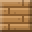 | Kraken lure | Use: Calls the boss back to fight again. Use it out on the sea where the Kraken lives | Dropped by the Kraken when it falls. Use it out on the sea where the Kraken lives to call the boss back | 50c |
Seeds
| Item | Stats | How to get it | Sell | |
|---|---|---|---|---|
 | Wheat seeds | Use: Plant on tilled soil | 1 Wheat by hand (makes 2); Herbalist 2c for 3 | - |
| Carrot seeds | Use: Plant on tilled soil | 1 Carrot by hand (makes 2); Herbalist 2c for 3 | - | |
 | Pumpkin seeds | Use: Plant on tilled soil | 1 Pumpkin by hand (makes 4); Herbalist 1c for 2 | - |
 | Seed potato | Use: Plant on tilled soil | 1 Potato by hand (makes 2); Herbalist 2c for 3 | - |
Openable treasures
| Item | Stats | How to get it | Sell | |
|---|---|---|---|---|
 | Jewel box | Use: Open it for gems | Fishing | - |
 | Sealed chest | Use: Open it for treasure | Fishing | - |
 | Message in a bottle | Use: Open it to read the message | Fishing | - |
Fish
| Item | Stats | How to get it | Sell | |
|---|---|---|---|---|
 | Trout | Heals: 6 | Fishing | 4c |
 | Bass | Heals: 7 | Fishing | 4c |
 | Cod | Heals: 7 | Fishing | 4c |
 | Tuna | Heals: 10 | Fishing | 6c |
 | Pufferfish | Heals: 3 | Fishing | 3c |
 | Swordfish | Heals: 12 | Fishing | 8c |
 | Anglerfish | Heals: 8 | Fishing | 5c |
Materials, gems, treasure and junk
| Item | Stats | How to get it | Sell | |
|---|---|---|---|---|
 | Iron bar | Use: Smelted from 3 iron ore at a furnace. The everyday metal for iron tools, weapons, armor and boats | 3 Iron ore at furnace | 14c |
| Gold bar | Use: Smelted from 3 gold ore at a furnace. Makes gold tools, weapons and armor, and larger boats | 3 Gold ore at furnace; Dropped by goblin beastmaster; Dropped by ogre; Dropped by grukk the ogre king | 28c | |
 | Ruby | Use: A red gem from ruby ore, imps and golems. Used in fire weapons, the fire rune, staffs and amulets | Jeweler 60c; Dropped by goblin beastmaster; Dropped by imp; Dropped by grukk the ogre king; Dropped by crystal golem; Dropped by thornback beetle | 30c |
 | Emerald | Use: A green gem from emerald ore and mossy skeletons. Used in mana potions, staffs, the mana ring and the life rune | Jeweler 45c; Dropped by mossy skeleton; Dropped by crystal golem; Dropped by jade crab; Dropped by giant cave spider; Dropped by jade mantis; Dropped by moss troll | 18c |
 | Mythril bar | Use: Smelted from 3 mythril ore at the orc blast furnace. Makes mythril tools, weapons, armor and the warship | 3 Mythril ore at orc blast furnace | 55c |
 | Adamantite bar | Use: Smelted from 4 adamantite ore at the orc blast furnace. The strongest metal before storm: adamantite tools, weapons and armor | 4 Adamantite ore at orc blast furnace | 110c |
 | Silver bar | Use: Smelted from 3 silver ore at a furnace. Makes silver armor and weapons, the mana ring and the recall mirror | 3 Silver ore at furnace | 10c |
 | Amethyst | Use: A purple gem from amethyst crystals in caves. Used in the cloud charm, the sun amulet, the mana rune and the silver staff | Jeweler 30c | 12c |
 | Sapphire | Use: A blue gem from sapphire ore and crystal golems. Used in the tri-shot bow, the Tempest staff, the frost rune and storm charms | Jeweler 60c; Dropped by crystal golem; Dropped by azure spider; Dropped by thornback beetle; Dropped by deep stalker | 3c |
 | Wheat | Use: Harvested from wheat fields. Bake it into bread, pies and stews, plant it as seeds, or make thatch | Harvest ripe wheat with a hoe (plant wheat seeds on tilled soil); hired farmers bring it home too | 3c |
 | Shark fin | Use: Dropped by sharks. Cook it into shark fin soup | Dropped by shark | 10c |
 | Egg | Use: Laid by birds in pens and bird cages. Cook it into omelettes, honey cake and pumpkin pie | Found, mined or dropped | 3c |
 | Bone | Use: Dropped by skeletons and frost monsters. Makes bone daggers and black powder for bombs | Dropped by skeleton archer; Dropped by mossy skeleton; Dropped by frost archer; Dropped by frost brute; Dropped by cave bat; Dropped by fossil raptor; Dropped by giant cave spider; Dropped by bone hound; Dropped by deep stalker | 3c |
 | Golden fish | Use: A rare, shining catch. Roast it into a golden fish feast, or craft two with pearls into the Lucky lure | Fishing | 60c |
 | Herb | Use: Picked from herb plants. Makes beds, herbal tonic and healing potions | Found, mined or dropped | 4c |
 | Coral | Use: Sea treasure pulled up while fishing. Two make four coral blocks | Fishing | 8c |
 | Pearl | Use: Sea treasure from fishing and sea expeditions. Used in the gold rod, the Lucky lure and the Tidecrown | Fishing | 25c |
 | Black pearl | Use: A rare sea treasure. Used in the mythril rod, the Shadow cloak and the Tidecrown | Fishing | 90c |
 | Ancient coin | Use: An old coin from the seabed. Eight and a gold bar make a Lucky coin charm | Fishing | 40c |
 | Sunken crown | Use: A jewelled crown lost at sea. With pearls it becomes the Tidecrown charm | Fishing | 150c |
 | Old compass | Use: A brass compass from a sunken ship. Craft it into a Dragon compass or an Astrolabe | Fishing | 60c |
 | Kraken ink | Use: Dark ink from the deep sea. Two, a black pearl and silver make the Shadow cloak | Fishing | 70c |
 | Old boot | Use: Junk | Fishing | 1c |
 | Tin can | Use: Junk | Fishing | 1c |
 | Rusty chain | Use: Junk | Fishing | 1c |
 | Seaweed | Use: Worthless junk. Delete it in your bag | Fishing | - |
 | Soggy paper | Use: Worthless junk. Delete it in your bag | Fishing | - |
 | Broken bottle | Use: Worthless junk. Delete it in your bag | Fishing | - |
 | Diamond | Use: A rare gem from deep diamond ore. Makes diamond tools, weapons and armor and the keen rune | Dropped by grukk the ogre king; Diamond ore deep underground (from about 43% of the way down to the magma realm, gold pickaxe or better); Grukk the Ogre King; gold chests | 40c |
 | Sugar | Use: Pressed from sugar cane. Bake it into sugar cake, berry tart, sugar cookies and candied apples | 2 Sugar cane by hand (makes 2) | 2c |
 | Sticks | Use: Handles for every tool and weapon | 2 Oak planks by hand (makes 4) | 3c |
 | Wool | Use: Shorn from sheep. Makes beds, rugs, paintings, grappling hooks and windrunner boots | Found, mined or dropped | 3c |
 | Blossom koi | Use: A spring rarity from lakes and rivers. Final rod only | Fishing with the final rod in lakes and rivers in spring | 90c |
 | Sunfish | Use: Basks in summer seas. Final rod only | Fishing with the final rod at sea in summer | 90c |
 | Storm eel | Use: Rises in autumn storms. Final rod only | Fishing with the final rod during autumn storms | 110c |
 | Ice pike | Use: Bites in winter. Final rod only | Fishing with the final rod in winter | 100c |
 | Moon jelly | Use: Glows in the sea at night. Final rod only | Fishing with the final rod at sea at night | 120c |
 | Sea glass | Use: Smooth glass from the sea | Fishing | 12c |
 | Conch shell | Use: A big spiral shell | Fishing | 22c |
 | Nautilus shell | Use: A perfect shell from the deep. Final rod only | Fishing | 160c |
 | Storm bar | Use: Smelted from 3 storm ore at a furnace. Makes storm tools, weapons and armor, and the lightning rod | 3 Storm ore at furnace | 80c |
 | Black powder | Use: Made from coal and bone. Packed into bombs | 2 Coal, 1 Bone at workbench (makes 2); Demolitionist 22c for 4 | 2c |
 | Charcoal | Use: Wood burned in a furnace. With a stick it makes torches; coal works the same | 1 Oak log at furnace | 1c |
 | Grow meal | Use: Use it on a crop to grow it a stage, or on a sapling to grow a tree. Made from bones, or from wheat seeds, glowcaps and berries at a composter | 1 Bone by hand (makes 3); 6 Wheat seeds at composter (makes 2); 3 Glowcap at composter (makes 2); 4 Berries at composter (makes 2) | 2c |
Stairs, slopes and half blocks
| Item | Stats | How to get it | Sell | |
|---|---|---|---|---|
 | Oak planks stairs | - | 3 Oak planks at workbench (makes 4) | - |
 | Oak planks slope | - | 2 Oak planks at workbench (makes 2) | - |
 | Oak planks half block | - | 1 Oak planks at workbench (makes 2) | - |
 | Stone brick stairs | - | 3 Stone brick at workbench (makes 4) | - |
 | Stone brick slope | - | 2 Stone brick at workbench (makes 2) | - |
 | Stone brick half block | - | 1 Stone brick at workbench (makes 2) | - |
 | Castle stone stairs | - | 3 Castle stone at workbench (makes 4) | - |
 | Castle stone slope | - | 2 Castle stone at workbench (makes 2) | - |
 | Castle stone half block | - | 1 Castle stone at workbench (makes 2) | - |
 | Marble stairs | - | 3 Marble at workbench (makes 4) | - |
 | Marble slope | - | 2 Marble at workbench (makes 2) | - |
 | Marble half block | - | 1 Marble at workbench (makes 2) | - |
 | Dark oak planks stairs | - | 3 Dark oak planks at workbench (makes 4) | - |
 | Dark oak planks slope | - | 2 Dark oak planks at workbench (makes 2) | - |
 | Dark oak planks half block | - | 1 Dark oak planks at workbench (makes 2) | - |
 | Sandstone brick stairs | - | 3 Sandstone brick at workbench (makes 4) | - |
 | Sandstone brick slope | - | 2 Sandstone brick at workbench (makes 2) | - |
 | Sandstone brick half block | - | 1 Sandstone brick at workbench (makes 2) | - |
 | Spruce planks stairs | - | 3 Spruce planks at workbench (makes 4) | - |
 | Spruce planks slope | - | 2 Spruce planks at workbench (makes 2) | - |
 | Spruce planks half block | - | 1 Spruce planks at workbench (makes 2) | - |
 | Birch planks stairs | - | 3 Birch planks at workbench (makes 4) | - |
 | Birch planks slope | - | 2 Birch planks at workbench (makes 2) | - |
 | Birch planks half block | - | 1 Birch planks at workbench (makes 2) | - |
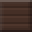 | Palm planks stairs | - | 3 Palm planks at workbench (makes 4) | - |
 | Palm planks slope | - | 2 Palm planks at workbench (makes 2) | - |
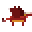 | Palm planks half block | - | 1 Palm planks at workbench (makes 2) | - |
 | Jungle planks stairs | - | 3 Jungle planks at workbench (makes 4) | - |
 | Jungle planks slope | - | 2 Jungle planks at workbench (makes 2) | - |
 | Jungle planks half block | - | 1 Jungle planks at workbench (makes 2) | - |
Background walls
| Item | Stats | How to get it | Sell | |
|---|---|---|---|---|
 | Plank wall | - | 1 Oak planks by hand (makes 4) | - |
 | Brick wall | - | 1 Stone brick by hand (makes 4) | - |
| Stone wall | - | 1 Stone by hand (makes 4) | - | |
 | Marble wall | - | 1 Marble by hand (makes 4) | - |
 | Red brick wall | - | 1 Red brick by hand (makes 4) | - |
 | Dark plank wall | - | 1 Dark oak planks by hand (makes 4) | - |
 | Window wall | Use: A back wall of glass panes. The sky shows through it and daylight comes in | 1 Glass, 1 Sticks at workbench (makes 4) | - |
 | Spruce plank wall | - | 1 Spruce planks by hand (makes 4) | - |
 | Birch plank wall | - | 1 Birch planks by hand (makes 4) | - |
 | Palm plank wall | - | 1 Palm planks by hand (makes 4) | - |
 | Jungle plank wall | - | 1 Jungle planks by hand (makes 4) | - |
Blocks, furniture and stations
| Item | Stats | How to get it | Sell | |
|---|---|---|---|---|
 | Dirt | - | Found, mined or dropped | 1c |
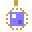 | Stone | - | Found, mined or dropped | 1c |
 | Oak log | - | Chop trees with an axe (or by hand); the logs drop where the tree falls | 2c |
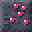 | Oak planks | - | 1 Oak log by hand (makes 4); Shipwright 5c for 20 | 1c |
 | Coal | - | Dropped by shale crawler | 2c |
 | Iron ore | - | Found, mined or dropped | 4c |
 | Gold ore | - | Found, mined or dropped | 8c |
| Sand | - | Found, mined or dropped | 1c | |
 | Stone brick | - | 2 Stone at workbench; Shipwright 40c for 20 | 1c |
 | Torch | - | 1 Sticks, 1 Charcoal by hand (makes 4); Shipwright 15c for 10 | - |
 | Obsidian | - | Dropped by magma skeleton | 6c |
 | Green banner | - | Found, mined or dropped | 1c |
 | Blue banner | - | Found, mined or dropped | 1c |
 | Red banner | - | Found, mined or dropped | 1c |
 | Workbench | - | 10 Oak planks by hand | 1c |
 | Furnace | - | 20 Stone, 4 Oak log, 3 Torch at workbench | 1c |
 | Glass | - | 2 Sand at furnace; Shipwright 20c for 10 | 1c |
 | Wood platform | - | 1 Oak planks by hand (makes 2); Shipwright 3c for 20 | - |
 | Roof tiles | - | 1 Stone, 1 Sand at furnace (makes 2); Shipwright 10c for 10 | - |
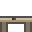 | Mythril ore | - | Sky realm clouds, after the Sky Ranger falls | 16c |
 | Adamantite ore | - | Magma realm, after both realm bosses fall | 26c |
 | Silver ore | - | Found, mined or dropped | 3c |
 | Deepstone | - | Found, mined or dropped | 1c |
 | Glow mushroom | Use: A plant. Set it on solid ground. | 2 Glowcap by hand | 1c |
| Marble | - | Found, mined or dropped | 1c | |
 | Granite | - | Found, mined or dropped | 1c |
 | Sandstone brick | - | 2 Sand at workbench (makes 2) | 1c |
 | Red brick | - | 2 Dirt, 1 Stone at furnace (makes 2) | 1c |
 | Dark oak planks | - | 1 Dark oak log by hand (makes 4); 1 Oak log, 1 Coal at workbench (makes 4) | 1c |
 | Blue tile | - | 2 Stone, 1 Glass at furnace (makes 2) | 1c |
 | Gold block | - | 2 Gold bar at furnace | 1c |
 | Red stained glass | - | 2 Glass, 1 Red brick at furnace (makes 2) | 1c |
 | Blue stained glass | - | 2 Glass, 1 Blue tile at furnace (makes 2) | 1c |
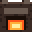 | Lantern | - | 1 Glass, 1 Torch, 1 Iron bar at workbench; 1 Iron bar, 1 Torch at workbench | 1c |
 | Fence | - | 2 Oak planks by hand (makes 4) | 1c |
 | Bookshelf | - | 6 Oak planks at workbench | 1c |
 | Oak door | - | 6 Oak planks at workbench | 1c |
 | Snow | - | Found, mined or dropped | 1c |
 | Chest | - | 8 Oak planks, 1 Iron bar at workbench; Shipwright 37c | 1c |
 | Mossy stone | - | Dropped by mossy zombie; Dropped by moss troll | 1c |
| Magma rock | - | Found, mined or dropped | 1c | |
 | Crystal block | - | Found, mined or dropped | 1c |
 | Cloud | - | Found, mined or dropped | 1c |
 | Plaster | - | Found, mined or dropped | 1c |
 | Timber beam | - | Found, mined or dropped | 1c |
| Blue roof tiles | - | Found, mined or dropped | 1c | |
 | Castle stone | - | Found, mined or dropped | 1c |
| Sky brick | - | Found, mined or dropped | 1c | |
 | Window | - | 2 Glass, 2 Sticks at workbench (makes 2) | 1c |
 | Charred wood | - | Found, mined or dropped | 1c |
 | Ash | - | Found, mined or dropped | 1c |
 | Red stone | - | Found, mined or dropped | 1c |
 | Green stone | - | Found, mined or dropped | 1c |
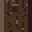 | Sapling | - | 1 Apple, 1 Dirt by hand; Herbalist 4c for 2 | 1c |
 | Berry bush | - | 3 Berries, 1 Dirt by hand; Herbalist 4c | 2c |
| Red flower | - | 1 Wheat seeds, 1 Berries by hand; Herbalist 5c for 3 | - | |
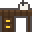 | Yellow flower | - | 1 Wheat seeds, 1 Honey by hand; Herbalist 5c for 3 | - |
| Blue flower | - | 1 Wheat seeds, 1 Raw fish by hand; Herbalist 24c for 3 | 2c | |
 | Tall grass | Use: A plant. Set it on solid ground. | 1 Wheat seeds, 1 Dirt by hand (makes 2) | 2c |
 | Fern | - | 1 Wheat seeds, 1 Dirt by hand; Herbalist 5c for 3 | - |
 | Herb plant | - | 2 Herb, 1 Dirt by hand; Herbalist 42c for 2 | 2c |
 | Cactus | - | 1 Wheat seeds, 3 Sand by hand; Herbalist 4c | 2c |
 | Sugar cane | - | 2 Wheat seeds, 1 Sand by hand; Herbalist 4c for 2 | 1c |
 | Bush | Use: A plant. Set it on solid ground. | 2 Wheat seeds, 1 Dirt by hand | 2c |
 | Siege workshop | - | 30 Oak planks, 6 Iron bar, 20 Stone at workbench | 1c |
 | Bed | - | 3 Wool, 6 Oak planks at workbench; 10 Oak planks, 2 Herb at workbench | 1c |
 | Ice | - | Dropped by frost archer; Dropped by frost brute | 1c |
 | Pumpkin | Use: Place it as a block, bake it into pumpkin pie, or cut it into seeds | Found, mined or dropped | 1c |
| Campfire | - | 3 Oak log, 2 Coal, 2 Stone by hand | 1c | |
 | Bright torch | - | 2 Torch, 1 Silver bar at workbench (makes 2) | 1c |
 | Spruce log | - | Chop trees with an axe (or by hand); the logs drop where the tree falls | 2c |
 | Spruce planks | - | 1 Spruce log by hand (makes 4) | 1c |
 | Birch log | - | Chop trees with an axe (or by hand); the logs drop where the tree falls | 2c |
 | Birch planks | - | 1 Birch log by hand (makes 4) | 1c |
 | Palm log | - | Chop trees with an axe (or by hand); the logs drop where the tree falls | 2c |
 | Palm planks | - | 1 Palm log by hand (makes 4) | 1c |
| Jungle log | - | Chop trees with an axe (or by hand); the logs drop where the tree falls | 2c | |
 | Jungle planks | - | 1 Jungle log by hand (makes 4) | 1c |
 | Dark oak log | - | Chop trees with an axe (or by hand); the logs drop where the tree falls | 2c |
 | Orc blast furnace | - | Found, mined or dropped | 2c |
 | Chair | - | 4 Oak planks, 2 Sticks at workbench | 1c |
 | Table | - | 6 Oak planks, 2 Sticks at workbench | 1c |
 | Desk | - | 8 Oak planks, 2 Sticks at workbench | 1c |
 | Bench | - | 5 Oak planks at workbench | 1c |
 | Barrel | - | 8 Oak planks, 1 Iron bar at workbench | 1c |
 | Cupboard | - | 10 Oak planks, 2 Sticks at workbench | 1c |
 | Painting | - | 4 Sticks, 2 Wool at workbench | 1c |
 | Stool | - | 2 Oak planks, 2 Sticks at workbench | 1c |
 | Standing lamp | - | 1 Iron bar, 1 Torch, 2 Sticks at workbench | 1c |
 | Wool rug | Use: A wool rug that lies flat on the floor | 3 Wool at workbench (makes 2) | 1c |
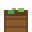 | Item shelf | - | 4 Oak planks, 2 Sticks at workbench | 1c |
 | Spruce door | - | 6 Spruce planks at workbench | 1c |
 | Birch door | - | 6 Birch planks at workbench | 1c |
 | Palm door | - | 6 Palm planks at workbench | 1c |
 | Jungle door | - | 6 Jungle planks at workbench | 1c |
 | Dark oak door | - | 6 Dark oak planks at workbench | 1c |
 | Archmage's staff trophy | Use: A picture of the boss you beat. Hang it on a back wall (it fills 2 by 2 blocks) in your home village: +20 maximum mana | Found, mined or dropped | 1c |
 | Magma wizard's mask trophy | Use: A picture of the boss you beat. Hang it on a back wall (it fills 2 by 2 blocks) in your home village: fire and lava hurt you 40% less | Found, mined or dropped | 1c |
 | Sky Ranger's bow trophy | Use: A picture of the boss you beat. Hang it on a back wall (it fills 2 by 2 blocks) in your home village: move 8% faster | Found, mined or dropped | 1c |
 | Magma Knight's helm trophy | Use: A picture of the boss you beat. Hang it on a back wall (it fills 2 by 2 blocks) in your home village: +3 defense | Found, mined or dropped | 1c |
 | Grukk's tusk trophy | Use: A picture of the boss you beat. Hang it on a back wall (it fills 2 by 2 blocks) in your home village: +20 maximum health | Found, mined or dropped | 1c |
 | Goblin Beastmaster's banner trophy | Use: A picture of the boss you beat. Hang it on a back wall (it fills 2 by 2 blocks) in your home village: your animals hit 15% harder | Found, mined or dropped | 1c |
 | Kraken's tentacle trophy | Use: A picture of the boss you beat. Hang it on a back wall (it fills 2 by 2 blocks) in your home village: hold your breath 50% longer | Found, mined or dropped | 1c |
 | Vorthax's horn trophy | Use: A picture of the boss you beat. Hang it on a back wall (it fills 2 by 2 blocks) in your home village: you deal 10% more damage | Found, mined or dropped | 1c |
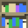 | Arrow slit | - | Found, mined or dropped | 1c |
 | Throne | - | Found, mined or dropped | 1c |
 | Weapon rack | - | Found, mined or dropped | 1c |
 | Armor stand | - | Found, mined or dropped | 1c |
 | Storm ore | - | Found, mined or dropped | 30c |
 | Lightning rod | Use: Lightning in a storm strikes it, leaving storm ore in the ground nearby | 3 Storm bar, 2 Iron bar at workbench | 1c |
 | Jack-o'-lantern | Use: A carved pumpkin that glows | 1 Pumpkin, 1 Torch by hand | 1c |
 | Scorched stone | Use: Stone blackened by a blast. Builds like stone | Found, mined or dropped | 1c |
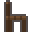 | Spruce sapling | Use: Plant it on grass or dirt and it grows into a spruce tree | Herbalist 9c for 2 | 2c |
 | Birch sapling | Use: Plant it on grass or dirt and it grows into a birch tree | Herbalist 9c for 2 | 2c |
 | Palm sapling | Use: Plant it on grass or dirt and it grows into a palm tree | Herbalist 9c for 2 | 2c |
 | Jungle sapling | Use: Plant it on grass or dirt and it grows into a jungle tree | Herbalist 9c for 2 | 2c |
 | Dark oak sapling | Use: Plant it on grass or dirt and it grows into a dark oak tree | Herbalist 9c for 2 | 2c |
 | Bird cage | Use: Put tamed birds in it (Army: Cage). Up to 4 birds lay eggs in it each morning; use it to collect them | 2 Iron bar, 4 Sticks at workbench | 1c |
 | Thatch | Use: Bundled straw for roofs. It catches fire easily | 3 Wheat at workbench (makes 4) | 1c |
| Iron plate | Use: Riveted iron for walls. Fire cannot burn it; it takes an iron pickaxe to break | 1 Iron bar, 2 Castle stone at workbench (makes 4) | 2c | |
 | Iron beam | Use: A dark iron beam for frames and trim | 1 Iron bar at workbench (makes 4) | 2c |
 | Iron roof | Use: Iron roofing that shrugs off fire and storms | 1 Iron bar, 1 Castle stone at workbench (makes 4) | 2c |
 | Deep stone brick | Use: Dark, heavy bricks cut from the deep stone; a Town castle is built of them | 4 Castle stone, 1 Coal at furnace (makes 4) | 2c |
 | Deep stone trim | Use: Dark dressed stone for corners and beams | 4 Deep stone brick at workbench (makes 4) | 2c |
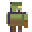 | Spruce table | Use: Table Made of spruce wood. | 6 Spruce planks, 2 Sticks at workbench | 1c |
 | Birch table | Use: Table Made of birch wood. | 6 Birch planks, 2 Sticks at workbench | 1c |
 | Palm table | Use: Table Made of palm wood. | 6 Palm planks, 2 Sticks at workbench | 1c |
 | Jungle table | Use: Table Made of jungle wood. | 6 Jungle planks, 2 Sticks at workbench | 1c |
 | Dark oak table | Use: Table Made of dark oak wood. | 6 Dark oak planks, 2 Sticks at workbench | 1c |
 | Spruce chair | Use: Chair Made of spruce wood. | 4 Spruce planks, 2 Sticks at workbench | 1c |
| Birch chair | Use: Chair Made of birch wood. | 4 Birch planks, 2 Sticks at workbench | 1c | |
 | Palm chair | Use: Chair Made of palm wood. | 4 Palm planks, 2 Sticks at workbench | 1c |
 | Jungle chair | Use: Chair Made of jungle wood. | 4 Jungle planks, 2 Sticks at workbench | 1c |
 | Dark oak chair | Use: Chair Made of dark oak wood. | 4 Dark oak planks, 2 Sticks at workbench | 1c |
 | Spruce bench | Use: Bench Made of spruce wood. | 5 Spruce planks at workbench | 1c |
 | Birch bench | Use: Bench Made of birch wood. | 5 Birch planks at workbench | 1c |
| Palm bench | Use: Bench Made of palm wood. | 5 Palm planks at workbench | 1c | |
 | Jungle bench | Use: Bench Made of jungle wood. | 5 Jungle planks at workbench | 1c |
 | Dark oak bench | Use: Bench Made of dark oak wood. | 5 Dark oak planks at workbench | 1c |
 | Spruce stool | Use: Stool Made of spruce wood. | 2 Spruce planks, 2 Sticks at workbench | 1c |
| Birch stool | Use: Stool Made of birch wood. | 2 Birch planks, 2 Sticks at workbench | 1c | |
 | Palm stool | Use: Stool Made of palm wood. | 2 Palm planks, 2 Sticks at workbench | 1c |
 | Jungle stool | Use: Stool Made of jungle wood. | 2 Jungle planks, 2 Sticks at workbench | 1c |
 | Dark oak stool | Use: Stool Made of dark oak wood. | 2 Dark oak planks, 2 Sticks at workbench | 1c |
 | Spruce bed | Use: Bed Made of spruce wood. | 3 Wool, 6 Spruce planks at workbench; 10 Spruce planks, 2 Herb at workbench | 1c |
 | Birch bed | Use: Bed Made of birch wood. | 3 Wool, 6 Birch planks at workbench; 10 Birch planks, 2 Herb at workbench | 1c |
| Palm bed | Use: Bed Made of palm wood. | 3 Wool, 6 Palm planks at workbench; 10 Palm planks, 2 Herb at workbench | 1c | |
 | Jungle bed | Use: Bed Made of jungle wood. | 3 Wool, 6 Jungle planks at workbench; 10 Jungle planks, 2 Herb at workbench | 1c |
 | Dark oak bed | Use: Bed Made of dark oak wood. | 3 Wool, 6 Dark oak planks at workbench; 10 Dark oak planks, 2 Herb at workbench | 1c |
 | Spruce bookshelf | Use: Bookshelf Made of spruce wood. | 6 Spruce planks at workbench | 1c |
 | Birch bookshelf | Use: Bookshelf Made of birch wood. | 6 Birch planks at workbench | 1c |
 | Palm bookshelf | Use: Bookshelf Made of palm wood. | 6 Palm planks at workbench | 1c |
 | Jungle bookshelf | Use: Bookshelf Made of jungle wood. | 6 Jungle planks at workbench | 1c |
| Dark oak bookshelf | Use: Bookshelf Made of dark oak wood. | 6 Dark oak planks at workbench | 1c | |
 | Spruce cupboard | Use: Cupboard Made of spruce wood. | 10 Spruce planks, 2 Sticks at workbench | 1c |
 | Birch cupboard | Use: Cupboard Made of birch wood. | 10 Birch planks, 2 Sticks at workbench | 1c |
| Palm cupboard | Use: Cupboard Made of palm wood. | 10 Palm planks, 2 Sticks at workbench | 1c | |
 | Jungle cupboard | Use: Cupboard Made of jungle wood. | 10 Jungle planks, 2 Sticks at workbench | 1c |
 | Dark oak cupboard | Use: Cupboard Made of dark oak wood. | 10 Dark oak planks, 2 Sticks at workbench | 1c |
 | Spruce desk | Use: Desk Made of spruce wood. | 8 Spruce planks, 2 Sticks at workbench | 1c |
| Birch desk | Use: Desk Made of birch wood. | 8 Birch planks, 2 Sticks at workbench | 1c | |
 | Palm desk | Use: Desk Made of palm wood. | 8 Palm planks, 2 Sticks at workbench | 1c |
 | Jungle desk | Use: Desk Made of jungle wood. | 8 Jungle planks, 2 Sticks at workbench | 1c |
 | Dark oak desk | Use: Desk Made of dark oak wood. | 8 Dark oak planks, 2 Sticks at workbench | 1c |
 | Spruce barrel | Use: Barrel Made of spruce wood. | 8 Spruce planks, 1 Iron bar at workbench | 1c |
 | Birch barrel | Use: Barrel Made of birch wood. | 8 Birch planks, 1 Iron bar at workbench | 1c |
 | Palm barrel | Use: Barrel Made of palm wood. | 8 Palm planks, 1 Iron bar at workbench | 1c |
| Jungle barrel | Use: Barrel Made of jungle wood. | 8 Jungle planks, 1 Iron bar at workbench | 1c | |
| Dark oak barrel | Use: Barrel Made of dark oak wood. | 8 Dark oak planks, 1 Iron bar at workbench | 1c | |
 | Spruce workbench | Use: Workbench Made of spruce wood. | 10 Spruce planks by hand | 1c |
 | Birch workbench | Use: Workbench Made of birch wood. | 10 Birch planks by hand | 1c |
 | Palm workbench | Use: Workbench Made of palm wood. | 10 Palm planks by hand | 1c |
 | Jungle workbench | Use: Workbench Made of jungle wood. | 10 Jungle planks by hand | 1c |
| Dark oak workbench | Use: Workbench Made of dark oak wood. | 10 Dark oak planks by hand | 1c | |
 | Pine sapling | Use: Plant it on snow, grass or dirt and it grows into a tall snowy pine | 1 Spruce sapling, 2 Snow by hand; Herbalist 10c | 1c |
 | Blue mushroom spore | Use: Plant it on stone, moss, dirt or grass and it grows into a giant blue mushroom | Herbalist 14c | 1c |
 | Green mushroom spore | Use: Plant it on stone, moss, dirt or grass and it grows into a giant green mushroom | Herbalist 14c | 1c |
 | Red mushroom spore | Use: Plant it on stone, moss, dirt or grass and it grows into a giant red mushroom | Herbalist 14c | 1c |
 | Orange mushroom spore | Use: Plant it on stone, moss, dirt or grass and it grows into a giant orange mushroom | Herbalist 14c | 1c |
 | Log wall | Use: Logs stacked into a solid wall | 1 Oak log at workbench (makes 2) | 1c |
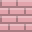 | Red clay tiles | Use: Rounded red roof tiles, like the roofs of the grandest shop houses | 2 Red brick at furnace (makes 4) | 1c |
| Clay eave | Use: A dark trim course for the edge of a tile roof | 1 Red brick, 1 Castle stone at furnace (makes 4) | 1c | |
 | Stone door | Use: A heavy door of stone slabs. It cannot burn | 6 Stone brick at workbench | 1c |
 | Iron door | Use: A riveted iron door. It cannot burn, and it takes an iron pickaxe to break | 3 Iron bar, 2 Castle stone at workbench | 2c |
 | Anvil | Use: The blacksmith works here. A home with an anvil can house a blacksmith | 5 Iron bar at workbench | 1c |
 | Cooking pot | Use: The cook works here. A home with a cooking pot can house a cook | 2 Iron bar, 1 Oak log at workbench | 1c |
| Herb rack | Use: The herbalist works here. A home with a herb rack can house a herbalist | 4 Oak planks, 3 Herb at workbench | 1c | |
 | Ship's wheel | Use: The shipwright works here. A home with a ship's wheel can house a shipwright | 6 Oak planks, 1 Iron bar at workbench | 1c |
 | Gem bench | Use: The jeweler works here. A home with a gem bench can house a jeweler | 4 Oak planks, 2 Glass at workbench | 1c |
 | Drafting table | Use: The war engineer works here. A home with a drafting table can house a war engineer | 5 Oak planks, 1 Iron bar at workbench | 1c |
 | Powder keg | Use: The demolitionist works here. A home with a powder keg can house a demolitionist | 1 Barrel, 2 Black powder at workbench | 1c |
 | Notice board | Use: The recruiter works here. A home with a notice board can house a recruiter | 4 Oak planks, 2 Sticks at workbench | 1c |
 | Feed trough | Use: The beast trainer works here. A home with a feed trough can house a beast trainer | 4 Oak planks, 4 Wheat at workbench | 1c |
 | Composter | Use: Farmers work here. A farmhouse or home with a composter can house farmers | 4 Oak planks, 4 Dirt at workbench | 1c |
 | Chopping block | Use: Woodcutters work here. A lodge or home with a chopping block can house woodcutters | 2 Oak log, 1 Sticks at workbench | 1c |
 | Ore cart | Use: Miners work here. A mine or home with an ore cart can house miners | 4 Iron bar, 2 Coal at workbench | 1c |
 | Guard post | Use: A soldier's post. Place it in a home that has a bed, a chest and a job item, then station a soldier at it from the Buildings window | 2 Oak planks, 1 Iron bar, 2 Sticks at workbench | 1c |
 | Stone table | Use: Table. Made of stone; it cannot burn. | 6 Castle stone, 2 Sticks at workbench | 1c |
 | Deep stone table | Use: Table. Made of deep stone; it cannot burn. | 6 Deep stone brick, 2 Sticks at workbench | 1c |
 | Iron table | Use: Table. Made of iron; it cannot burn. | 2 Iron bar, 2 Sticks at workbench | 1c |
 | Stone chair | Use: Chair. Made of stone; it cannot burn. | 4 Castle stone, 2 Sticks at workbench | 1c |
 | Deep stone chair | Use: Chair. Made of deep stone; it cannot burn. | 4 Deep stone brick, 2 Sticks at workbench | 1c |
 | Iron chair | Use: Chair. Made of iron; it cannot burn. | 2 Iron bar, 2 Sticks at workbench | 1c |
 | Stone bench | Use: Bench. Made of stone; it cannot burn. | 5 Castle stone at workbench | 1c |
 | Deep stone bench | Use: Bench. Made of deep stone; it cannot burn. | 5 Deep stone brick at workbench | 1c |
 | Iron bench | Use: Bench. Made of iron; it cannot burn. | 2 Iron bar at workbench | 1c |
 | Stone stool | Use: Stool. Made of stone; it cannot burn. | 2 Castle stone, 2 Sticks at workbench | 1c |
 | Deep stone stool | Use: Stool. Made of deep stone; it cannot burn. | 2 Deep stone brick, 2 Sticks at workbench | 1c |
 | Iron stool | Use: Stool. Made of iron; it cannot burn. | 1 Iron bar, 2 Sticks at workbench | 1c |
 | Stone bed | Use: Bed. Made of stone; it cannot burn. | 3 Wool, 6 Castle stone at workbench; 10 Castle stone, 2 Herb at workbench | 1c |
 | Deep stone bed | Use: Bed. Made of deep stone; it cannot burn. | 3 Wool, 6 Deep stone brick at workbench; 10 Deep stone brick, 2 Herb at workbench | 1c |
 | Iron bed | Use: Bed. Made of iron; it cannot burn. | 3 Wool, 2 Iron bar at workbench; 4 Iron bar, 2 Herb at workbench | 1c |
 | Stone bookshelf | Use: Bookshelf. Made of stone; it cannot burn. | 6 Castle stone at workbench | 1c |
 | Deep stone bookshelf | Use: Bookshelf. Made of deep stone; it cannot burn. | 6 Deep stone brick at workbench | 1c |
 | Iron bookshelf | Use: Bookshelf. Made of iron; it cannot burn. | 2 Iron bar at workbench | 1c |
 | Stone cupboard | Use: Cupboard. Made of stone; it cannot burn. | 10 Castle stone, 2 Sticks at workbench | 1c |
 | Deep stone cupboard | Use: Cupboard. Made of deep stone; it cannot burn. | 10 Deep stone brick, 2 Sticks at workbench | 1c |
 | Iron cupboard | Use: Cupboard. Made of iron; it cannot burn. | 4 Iron bar, 2 Sticks at workbench | 1c |
 | Stone desk | Use: Desk. Made of stone; it cannot burn. | 8 Castle stone, 2 Sticks at workbench | 1c |
 | Deep stone desk | Use: Desk. Made of deep stone; it cannot burn. | 8 Deep stone brick, 2 Sticks at workbench | 1c |
 | Iron desk | Use: Desk. Made of iron; it cannot burn. | 3 Iron bar, 2 Sticks at workbench | 1c |
 | Stone barrel | Use: Barrel. Made of stone; it cannot burn. | 8 Castle stone, 1 Iron bar at workbench | 1c |
 | Deep stone barrel | Use: Barrel. Made of deep stone; it cannot burn. | 8 Deep stone brick, 1 Iron bar at workbench | 1c |
 | Iron barrel | Use: Barrel. Made of iron; it cannot burn. | 3 Iron bar, 1 Iron bar at workbench | 1c |
| Green roof tiles | Use: Roof tiles in the green faction's colour | 2 Stone, 1 1 at furnace (makes 4) | 1c | |
 | Red iron roof | Use: Iron roofing painted in the red faction's colour | 4 Iron roof at workbench (makes 4) | 2c |
 | Green iron roof | Use: Iron roofing painted in the green faction's colour | 4 Iron roof at workbench (makes 4) | 2c |
 | Blue iron roof | Use: Iron roofing painted in the blue faction's colour | 4 Iron roof at workbench (makes 4) | 2c |
 | Green clay tiles | Use: Rounded roof tiles in the green faction's colour | 4 Red clay tiles at workbench (makes 4) | 1c |
 | Blue clay tiles | Use: Rounded roof tiles in the blue faction's colour | 4 Red clay tiles at workbench (makes 4) | 1c |
 | Dirt path | Use: Packed, trampled earth where villagers walk | 4 Dirt by hand (makes 4) | 1c |
 | Cobblestone path | Use: Rounded stones set into the ground for a town's streets | 4 Stone at workbench (makes 4) | 1c |
 | Iron walkway | Use: A riveted iron grate laid over the ground for a city's streets | 1 Iron bar, 2 Stone at workbench (makes 4) | 2c |
 | Jade stone | Use: Pale green stone from the jade caves | Found, mined or dropped | 2c |
 | Rose stone | Use: Pale red stone from the rose caves | Found, mined or dropped | 2c |
 | Azure stone | Use: Pale blue stone from the azure caves | Found, mined or dropped | 2c |
 | Dripstone | Use: Banded rock built up drop by drop in the stalagmite caves | Dropped by dripstone golem | 2c |
 | Fossil stone | Use: Sandstone holding the bones of long-gone creatures | Found, mined or dropped | 2c |
 | Jade shard | Use: A glowing green crystal from the jade caves | Dropped by jade crab; Dropped by jade mantis | 6c |
 | Rose quartz | Use: A glowing pink crystal from the rose caves | Dropped by rose wisp; Dropped by rose serpent | 6c |
 | Azure shard | Use: A glowing blue crystal from the azure caves | Dropped by azure spider | 6c |
 | Stalagmite | Use: A rock spike growing up from a cave floor | Dropped by dripstone golem | 1c |
 | Stalactite | Use: A rock spike hanging from a cave ceiling | Found, mined or dropped | 1c |
 | Glow bulb | Use: A glowing bulb that hangs from roots in the root caverns. A soft light for your home | Dropped by root wyrm | 6c |
 | Jade brick | Use: Cut and polished jade stone for building | 4 Jade stone at workbench (makes 4) | 2c |
 | Rose brick | Use: Cut and polished rose stone for building | 4 Rose stone at workbench (makes 4) | 2c |
 | Azure brick | Use: Cut and polished azure stone for building | 4 Azure stone at workbench (makes 4) | 2c |
 | Light red roof tiles | Use: Light roof tiles in the red faction's colour, for stone buildings | 4 Roof tiles at workbench (makes 4) | 1c |
| Light green roof tiles | Use: Light roof tiles in the green faction's colour, for stone buildings | 4 Roof tiles at workbench (makes 4) | 1c | |
 | Light blue roof tiles | Use: Light roof tiles in the blue faction's colour, for stone buildings | 4 Roof tiles at workbench (makes 4) | 1c |
 | Coral block | Use: Pink coral pressed into a building block | 2 Coral by hand (makes 4) | 2c |
| Blue rug | Use: A rug that lies flat on the floor | 3 Wool, 1 Blue flower at workbench (makes 2) | 2c | |
 | Green rug | Use: A rug that lies flat on the floor | 3 Wool, 1 Herb at workbench (makes 2) | 2c |
 | Golden rug | Use: A rug that lies flat on the floor | 3 Wool, 1 Gold bar at workbench (makes 2) | 2c |
| Striped rug | Use: A rug that lies flat on the floor | 3 Wool, 1 Red flower, 1 Yellow flower at workbench (makes 2) | 2c | |
 | Bamboo mat | Use: A rug that lies flat on the floor | 4 Sugar cane at workbench (makes 2) | 2c |
 | Breakdown bench | Use: Stand next to it to break items in your bag back into the materials they were made from. Unlocked by beating both wizards | 6 Iron bar, 10 Stone, 1 Diamond at workbench | 40c |
 | Dark slate arrow slit | Use: A narrow window your archers and mages can shoot through | 1 Arrow slit, 1 Deepstone at workbench | 1c |
 | Iron arrow slit | Use: A narrow window your archers and mages can shoot through | 1 Arrow slit, 1 Iron bar at workbench | 1c |
 | Oak trap door | Use: A door that lies in the floor. Closed, you stand on it and nothing comes up through it. Tap it, jump up under it or hold down on it to open it. Enemies cannot open it. | 3 Oak planks at workbench | 2c |
 | Spruce trap door | Use: A door that lies in the floor. Closed, you stand on it and nothing comes up through it. Tap it, jump up under it or hold down on it to open it. Enemies cannot open it. | 3 Spruce planks at workbench | 2c |
 | Birch trap door | Use: A door that lies in the floor. Closed, you stand on it and nothing comes up through it. Tap it, jump up under it or hold down on it to open it. Enemies cannot open it. | 3 Birch planks at workbench | 2c |
 | Palm trap door | Use: A door that lies in the floor. Closed, you stand on it and nothing comes up through it. Tap it, jump up under it or hold down on it to open it. Enemies cannot open it. | 3 Palm planks at workbench | 2c |
 | Jungle trap door | Use: A door that lies in the floor. Closed, you stand on it and nothing comes up through it. Tap it, jump up under it or hold down on it to open it. Enemies cannot open it. | 3 Jungle planks at workbench | 2c |
 | Dark oak trap door | Use: A door that lies in the floor. Closed, you stand on it and nothing comes up through it. Tap it, jump up under it or hold down on it to open it. Enemies cannot open it. | 3 Dark oak planks at workbench | 2c |
| Stone trap door | Use: A door that lies in the floor. Closed, you stand on it and nothing comes up through it. Tap it, jump up under it or hold down on it to open it. Enemies cannot open it. | 3 Castle stone at workbench | 2c | |
 | Deep stone trap door | Use: A door that lies in the floor. Closed, you stand on it and nothing comes up through it. Tap it, jump up under it or hold down on it to open it. Enemies cannot open it. | 3 Deep stone brick at workbench | 2c |
 | Iron trap door | Use: A door that lies in the floor. Closed, you stand on it and nothing comes up through it. Tap it, jump up under it or hold down on it to open it. Enemies cannot open it. | 2 Iron bar at workbench | 4c |
 | Shale | Use: Layered purple-grey rock, the middle of the three rock layers: below the stone near the surface and above the deepstone. Any pickaxe mines it. | Dropped by shale crawler | 1c |
| Jade glowcap | Use: A glowing mushroom from the jade caves. Place it on the ground for a soft light. | Found, mined or dropped | 4c | |
 | Jade fern | Use: A glowing plant from the jade caves. Place it on the ground for a soft light. | Found, mined or dropped | 4c |
 | Rose glowcap | Use: A glowing mushroom from the rose caves. Place it on the ground for a soft light. | Found, mined or dropped | 4c |
 | Rose lily | Use: A glowing plant from the rose caves. Place it on the ground for a soft light. | Found, mined or dropped | 4c |
 | Azure glowcap | Use: A glowing mushroom from the azure caves. Place it on the ground for a soft light. | Found, mined or dropped | 4c |
 | Frost bell | Use: A glowing plant from the azure caves. Place it on the ground for a soft light. | Found, mined or dropped | 4c |
 | Amber glowcap | Use: A glowing mushroom from the stalagmite caves. Place it on the ground for a soft light. | Found, mined or dropped | 4c |
 | Amber reed | Use: A glowing plant from the stalagmite caves. Place it on the ground for a soft light. | Found, mined or dropped | 4c |
 | Ember glowcap | Use: A glowing mushroom from the root caverns. Place it on the ground for a soft light. | Found, mined or dropped | 4c |
| Lantern flower | Use: A glowing plant from the root caverns. Place it on the ground for a soft light. | Dropped by root wyrm | 4c | |
 | Bone glowcap | Use: A glowing mushroom from the fossil beds. Place it on the ground for a soft light. | Found, mined or dropped | 4c |
 | Ghost orchid | Use: A glowing plant from the fossil beds. Place it on the ground for a soft light. | Found, mined or dropped | 4c |
 | Verdant glowcap | Use: A glowing mushroom from the overgrown caverns. Place it on the ground for a soft light. | Found, mined or dropped | 4c |
 | Moon bloom | Use: A glowing plant from the overgrown caverns. Place it on the ground for a soft light. | Dropped by glow moth | 4c |
 | Overgrown loam | Use: Dark, root-filled earth from the overgrown caverns | Found, mined or dropped | 1c |
 | Glowmoss turf | Use: Glowing moss on dark earth; it lines the floors of the overgrown caverns | Found, mined or dropped | 2c |
 | Giant stalk | Use: The stem of a giant fern from the overgrown caverns | Found, mined or dropped | 2c |
 | Giant leaf | Use: A leaf wide enough to stand on, from the giant ferns of the overgrown caverns | Found, mined or dropped | 2c |
 | Giant bloom | Use: A huge glowing flower head from the overgrown caverns | Found, mined or dropped | 6c |
 | Glowcap cap | Use: The cap of a giant glowcap; you can stand on it | Found, mined or dropped | 3c |
 | Glow vine | Use: A hanging vine from the overgrown caverns, dotted with glowing buds | Found, mined or dropped | 1c |
Everything else
| Item | Stats | How to get it | Sell | |
|---|---|---|---|---|
 | Fire rune | Use: Set it in a weapon: use it while holding the weapon. At level I 10% of your hits set enemies on fire; at level V 25% of your hits set enemies on fire. Every fire rune you add raises the level, and a different rune replaces it | 3 Ruby, 1 Gold bar at workbench; Jeweler 295c | - |
 | Frost rune | Use: Set it in a weapon: use it while holding the weapon. At level I 25% of your hits slow enemies to half speed for 1s; at level V 100% of your hits slow enemies to half speed for 2.5s. Every frost rune you add raises the level, and a different rune replaces it | 3 Sapphire, 1 Gold bar at workbench; Jeweler 73c | - |
 | Life rune | Use: Set it in a weapon: use it while holding the weapon. At level I you heal 3% of the damage you deal (up to 5 a hit); at level V you heal 10% of the damage you deal (up to 15 a hit). Every life rune you add raises the level, and a different rune replaces it | 3 Emerald, 1 Gold bar at workbench; Jeweler 205c | - |
 | Mana rune | Use: Set it in a weapon: use it while holding the weapon. At level I each hit gives you 1 mana; at level V each hit gives you 3 mana. Every mana rune you add raises the level, and a different rune replaces it | 3 Amethyst, 1 Silver bar at workbench; Jeweler 115c | - |
 | Keen rune | Use: Set it in a weapon: use it while holding the weapon. At level I it deals 4% more damage; at level V it deals 12% more damage. Every keen rune you add raises the level, and a different rune replaces it | 2 Diamond, 2 Gold bar at workbench; Jeweler 340c | - |
 | Shears | Use: Clip a sheep for 2 to 3 wool. The wool grows back in a day | 2 Iron bar at workbench | 15c |
 | Bucket | Use: Use it on water to fill it | 3 Iron bar at workbench | 10c |
 | Water bucket | Use: Pour out a block of water where you aim. Poured on lava, it hardens the lava to obsidian or stone | Use an empty bucket on water | 10c |
 | Small bomb | Use: Throw it where you aim. It bounces, then blows up after a short fuse (2-block blast). Your own bombs hurt you and your soldiers too, at half strength | 2 Black powder, 1 Iron bar at workbench (makes 3); Demolitionist 55c for 3 | 9c |
 | Big bomb | Use: Set it down at your feet and get clear: a 4-block blast after 3 seconds. Your own bombs hurt you and your soldiers too, at half strength | Demolitionist 150c | 40c |
 | Fire bomb | Use: Bursts when it hits something: a small blast that burns everything around it and sets enemies on fire. Your own bombs hurt you and your soldiers too, at half strength | 2 Black powder, 2 Coal, 1 Glass at workbench (makes 2); Demolitionist 32c for 2 | 8c |
 | Sticky bomb | Use: Sticks to the first wall or enemy it touches, then blows up 2 seconds later (3-block blast). Your own bombs hurt you and your soldiers too, at half strength | Demolitionist 160c for 2 | 25c |